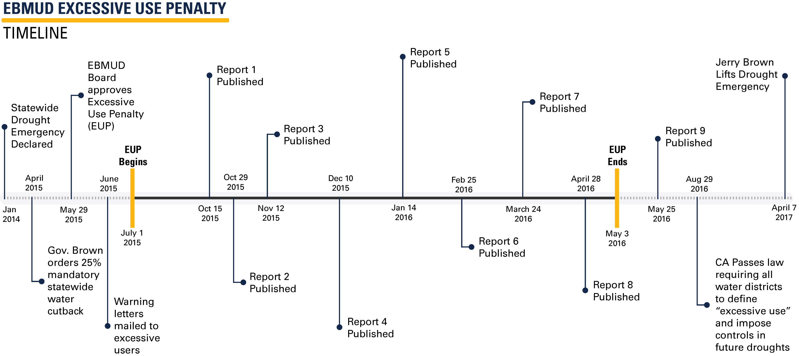

Research
Under Review
Are we #stayinghome to Flatten the Curve?

Abstract: The recent spread of COVID-19 across the U.S. led to concerted efforts by states to ``flatten the curve" through the adoption of stay-at-home mandates that encourage individuals to reduce travel and maintain social distance. Combining data on changes in travel activity with COVID-19 health outcomes and state policy adoption timing, we characterize nationwide changes in mobility patterns and isolate the portion attributable to statewide mandates. We find evidence of dramatic nationwide declines in mobility prior to adoption of any statewide mandates. Once states adopt a mandate, we estimate further mandate-induced declines between 2.1 and 7.0 percentage points across methods that account for states' differences in travel behavior prior to policy adoption. In addition, we investigate the effects of stay-at-home mandates on changes in COVID-19 health outcomes while controlling for pre-trends and observed pre-treatment mobility patterns. We estimate mandate-induced declines between 0.13 and 0.17 in deaths (5.6 to 6.0 in hospitalizations) per 100 thousand across methods. Across 43 adopting states, this represents 23,366-30,144 fewer deaths (and roughly one million averted hospitalizations) for the months of March and April - which indicates that death rates could have been 42-54% higher had states not adopted statewide policies. We further find evidence that changes in mobility patterns prior to adoption of statewide policies also played a role in reducing COVID-19 mortality and morbidity. Adding in averted deaths due to pre-mandate social distancing behavior, we estimate a total of 48-71,000 averted deaths from COVID-19 for the two-month period. Given that the actual COVID-19 death toll for March and April was 55,922, our estimates suggest that deaths would have been 1.86-2.27 times what they were absent any stay-at-home mandates during this period. These estimates represent a lower bound on the health impacts of stay-at-home policies, as they do not account for spillovers or undercounting of COVID-19 mortality. Our findings indicate that early behavior changes and later statewide policies reduced death rates and helped attenuate the negative consequences of COVID-19. Further, our findings of substantial reductions in mobility prior to state-level policies convey important policy implications for re-opening.
Tree-based Matching on Structural Equation Model Parameters
Abstract: Understanding causal effects of a treatment is often of interest in the social sciences. When treatments cannot be randomly assigned, researchers must ensure that treated and untreated participants are balanced on covariates before estimating treatment effects. Conventional practices are useful in matching such that treated and untreated participants have similar average values on their covariates. However, situations arise in which a researcher may instead want to match on model parameters. We propose an algorithm, Causal Mplus Trees, which uses decision trees to match on structural equation model parameters and estimates conditional average treatment effects in each node. We provide a proof of concept using two small simulation studies and demonstrate its application using COVID-19 data.
Publications
Describing the users: Understanding adoption of and interest in shared, electrified, and automated transportation in the San Francisco Bay Area
Abstract: Emerging technologies and services stand poised to transform the transportation system, with large implications for energy use and mobility. The degree and speed of these impacts depend largely on who adopts these innovations and how quickly. Leveraging data from a novel survey of San Francisco Bay Area residents, we analyze adoption patterns for shared mobility, electrified vehicle technologies, and vehicle automation. We find that ride-hailing and adaptive cruise control have penetrated the market more extensively than have electrified vehicles or car-sharing services. Over half of respondents have adopted or expressed interest in adopting all levels of vehicle automation. Overall, there is substantial potential for market growth for the technologies and services we analyzed. Using county fixed effects regressions, we investigate which individual and location-level factors correlate to adoption and interest. We find that, although higher-income people are disproportionately represented among current adopters of most new technologies and services, low to middle-income people are just as likely to have adopted pooled ride-hailing. Younger generations have high interest in automated and electrified vehicles relative to their current adoption of these technologies, suggesting that young people could contribute substantially to future market growth—as they are doing for ride-hailing. We find no evidence that longer commutes present a barrier to plug-in electric vehicle adoption. Finally, women are less likely than men to adopt and/or be interested in adopting most new transportation technologies, with the exception of ride-hailing; designing or marketing technologies with women’s preferences in mind could contribute to future market expansion.
In Progress
Culpable Consumption: Social Pressure and Excessive Water Use

Abstract: Household response to conservation policy is a key parameter of interest for public water utilities. Utility districts around the country face difficult decisions during drought conditions, and must find ways to incentivize consumer conservation behavior in order to meet state-imposed reductions. This paper investigates one of these nontraditional policies: social pressure. Social pressure is an avenue through which behavioral changes may be induced, particularly for price-insensitive consumers. Drawing on unique variation in social pressure exposure generated by a recent drought ordinance in response to California's statewide drought, I investigate whether exposure to social pressure induced additional conservation response beyond that elicited by a fee. Using generalized difference-in-difference and instrumented generalized random forests, I find evidence of large reductions in residential water use in future periods once called out by news media for excessive use in the current period.
Food for Thought: How Food Banks Mitigate the SNAP Benefit Cycle

Abstract: Many recent works have documented the existence of the “SNAP Benefit Cycle” in which a non-negligible portion of enrolled households exhaust their benefits early in the benefit month. Lack of benefits late in the month carries large consequences, with negative impacts ranging from reduced energy intake and nutritional content, to increased likelihood of hypoglycemia and pregnancy-related emergency room admissions, along with lowered test performance and increased disciplinary action for students. These effects diminish or are otherwise nonexistent for SNAP households that exhibit consumption smoothing. The ability for low-income households to complement resources from federal poverty programs with a local public good has major implications for household welfare and the value of food bank networks. This paper investigates the extent to which SNAP participants in California utilize food bank resources to augment consumption throughout the benefit month.
A Reputation For the Good Stuff: User Feedback Signaling and the Deep Web Market Silk Road
Abstract: Despite complete user anonymity, asymmetrical information, and incomplete enforcement mechanisms, the deep web market Silk Road facilitated approximately $200 million in illegal drug sales in 34 months. This study tests how the site’s reputation system facilitated successful transactions and how user feedback functioned as the primary signal of seller quality in the absence of formal contract enforcement. Using novel data from the site on marijuana, amphetamine, and meth transactions, listings, and vendors, I find strong evidence that consumers engaged with the site’s reputation system and relied on both item and seller-level information. Hedonic regressions provide evidence of a “bad news” learning environment, estimating a 3 to 11% price discount for negative item reviews. Seller ratings are found to act as an effective proxy for permanent seller characteristics, and named trains act as a primary source of quality (and price) differentiation for marijuana. I find no evidence of price penalties or signal heterogeneity for new sellers. This study is the first to shed light on the value of reputation on the deep web’s largest marketplace, yielding new insight into the mechanisms modern markets use to overcome social distance and prevent market failure.